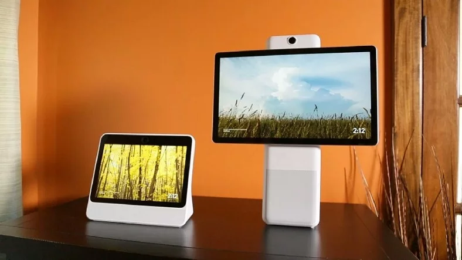
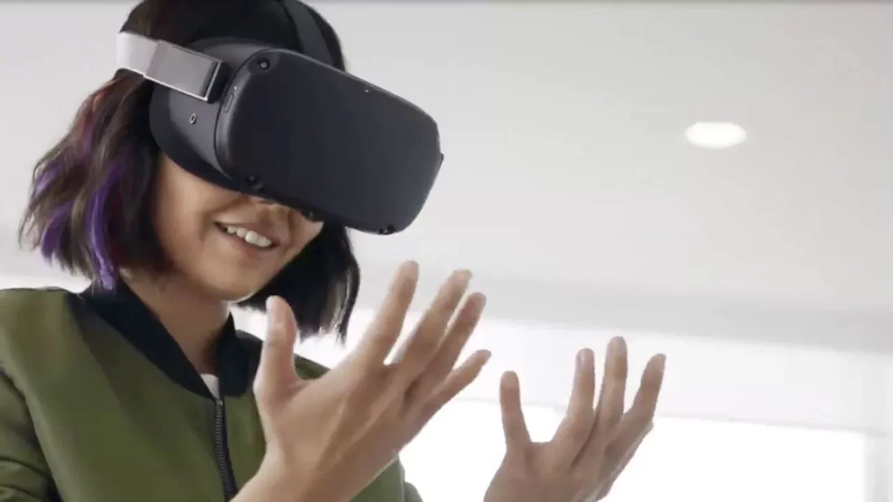

| Faruk Kayaduman |
|---|
| Oyun Geliştirici |
FACEBOOK, ANDROID'E RAKİP OLARAK KENDİ İŞLETİM SİSTEMİNİ GELİŞTİRİYORSosyal medyanın en büyük ismi Facebook, sürpriz işletim sistemi hamlesiyle gündeme geldi. Şirket kendi işletim sistemini geliştirerek Android'e olan bağımlılığını ortadan kaldırmaya çalışıyor.  Facebook, gelecekte Oculus ve Portal gibi donanım ürünlerinde Google'ın Android işletim sistemine bağımlılığını ortadan kaldırmak için kendi işletim sistemini geliştiriyor. Windows NT işletim sisteminin geliştirilmesine yardımcı olan eski Microsoft mühendisi olan Mark Lucovsky, projeye liderlik edecek ve sıfırdan yeni bir Facebook işletim sistemi yaratacak. Facebook OS, şirketin yeni teknolojilerinde kendi kendine yetebilmek için başlattığı büyük planın bir parçası olacak. Yeni işletim sisteminin ne şekilde kullanılabileceği hakkındaki bilgiler sınırlı ancak Facebook'un Oculus ve Portal cihazları, şu anda Android'in değiştirilmiş bir versiyonunda çalışıyor ve şirket bu durumdan memnun değil. Facebook'un geliştireceği işletim sistemi doğrudan akıllı telefonlarda bulunmayacak:Facebook'un AR ve VR başkanı Andrew Bosworth'un açıklamasına göre geliştirilen işletim sistemi Google'ın Facebook donanımları üzerindeki kontrolünü tamamen azaltacak. Bosworth işletim sistemi çalışmaları hakkında açıklama yaparak, "Gelecek nesilde bize yer açıldığından emin olmak istiyoruz. Durum böyleyken piyasaya veya rakiplere güvenebileceğimizi düşünmüyoruz. Bu nedenle kendimiz yapacağız." dedi. Facebook Oculus ve Portal cihazlarıyla birlikte, ayrıca artırılmış gerçeklik gözlükleri üzerinde çalışıyor. Bosworth, "Orion" kod adlı gözlüklerin 2023 yılında gelebileceğini belirtti. Şirket aynı zamanda gözlükleri için beyin kontrol arayüzü üzerinde de çalışıyor ve bu da kullanıcıların düşünceleriyle kontrol etmelerini sağlıyor. Gelen bilgiler, şirketin gelecekte Apple'a benzer bir yaklaşım sergilemeyi hedeflediğini gösteriyor. Facebook'un kendi işletim sistemini ve sesli asistan geliştirmesinin yanı sıra kendi özel yonga donanımı üzerinde de çalıştığı belirtiliyor. |
| |
| <--- Önceki Haber |
Faruk Kayaduman